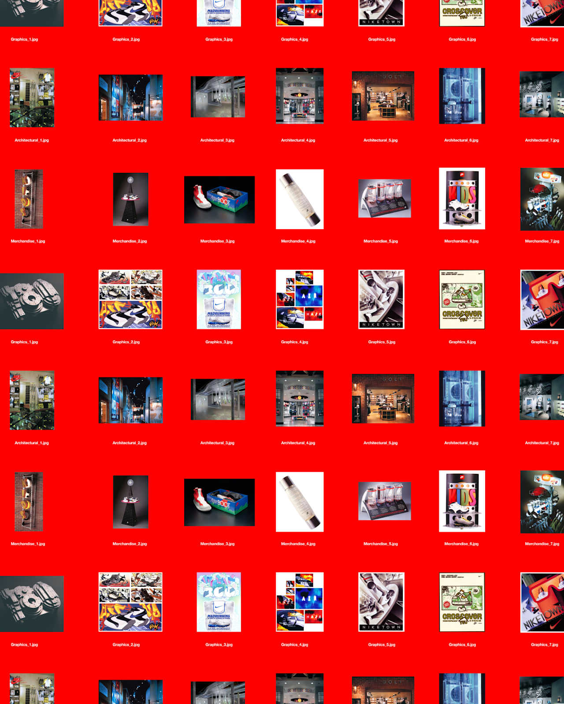

Nike Visual Archive
A deep dive down the rabbit hole of Nike’s visual history.
Evan Collins has spent years naming the parts of design history the textbooks skipped. An architect and design archivist, he founded the Consumer Aesthetics Research Institute (CARI), an online research community building a visual lexicon for the look of recent decades: the storefronts, logos, packaging, interiors and screen graphics that shaped everyday life and rarely got written down. For SNKRS, Evan scoured primary sources to assemble three image libraries showcasing Nike’s heritage of design innovation from the late 1980s to the late 2000s.